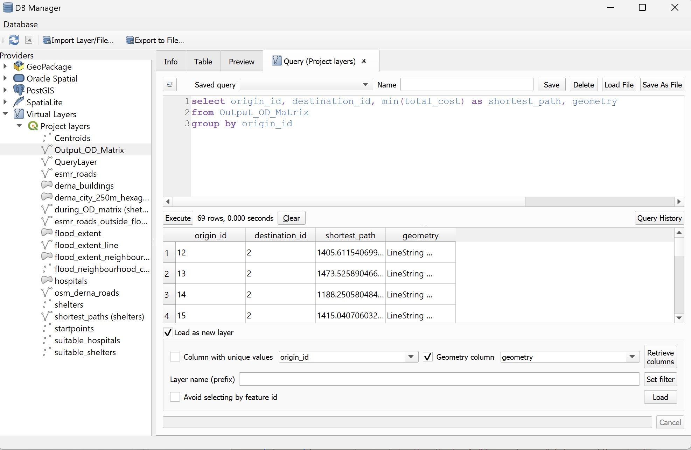
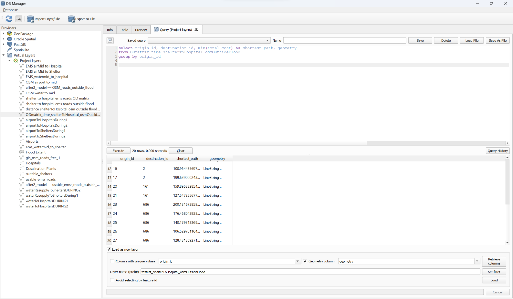

During Flood Scenario
Setting the Scene
For the During Flood scenario, we decided to use the points which the perimeter of the flood extent (flood extent outline) intersects with the roads as origin points where people can evacuate from the flood. This is because the road network within the flood area would be destroyed and flooded, and therefore unable to be used for evacuation.
Thus in this scenario, we assumed that remaining survivors of the flood would be able to escape to the edge of the flood extent and use the undestroyed road networks outside of the damaged area to evacuate to shelters and hospitals. Using the Roads data from Copernicus ESMR, we were thus able to ascertain which roads outside the flood extent could be used, which was all of them as the destroyed and damaged roads were mostly within the flood extent.
Clipping Roads outside of Flood Extent
From menu bar, select Vector → Geoprocessing Tools → Difference
Difference dialogue window appears.
Under Input layer, select emsr_roads (the GRA version)
For Overlay layer, select flood_extent
Click on Run.
Map window should now look like this with a temporary Difference layer created. Save this layer into Geopackage, naming it emsr_roads_outside_flood.
Converting Flood Extent Polygon to a Line layer
From the menu bar, select Processing → Toolbox.
Type ‘polygon to lines’ in the search bar
Select Polygons to lines under Vector geometry
Polygons to lines dialogue window appears.
Under Input layer, select flood_extent
Click on Run when ready for operation to run.
A temporary Line output layer will be created. Save this layer into Geopackage and name the layer as flood_extent_line.
Creating StartPoints at flood extent layer with Intersection
From Toolbox, type in ‘line intersections’ in search bar.
Select Line intersections under Vector overlay.
Line Intersections dialogue window appears.
Under Input layer, select flood_extent_line
Under Intersect layer, select emsr_roads
A temporary output layer named Intersections should be added into the map window.
Cleaning Intersection Points
Before saving the layer into Geopackage, we need to first check that the intersection points are valid to be considered as Startpoints where people can evacuate from the flood.
Zoom into the Intersections layer and use Toggle Editing and Select Features to remove points which are connected to broken roads or roads that only lead to another intersection point.
- After selecting the points that are unsuitable to be startpoints, click on the Trash icon in the Toggle Editing bar and delete the selected features.
After deleting all unsuitable points, save the temporary layer into Geopackage, name the layer as ‘startpoints’.
OD Matrix for Shelters
Now we want to origin-destination pairs from startpoints to shelters outside the flood extent. The shelters outside of the flood extent have been clipped and the layer is named suitable_shelters.
From Processing → Toolbox → type ‘od matrix’.
- Select OD Matrix from Layers as Lines (m:n) under Distance Matrices in the QNEAT3 plugin.
The OD Matrix from Layers as Lines dialogue window appears.
For Network Layer, select emsr_roads_outside_flood.
For From-Point Layer, select startpoints.
For To-Point Layer, select suitable_shleters.
Select Shortest Path (distance optimization) for Optimization Criterion
Under Advanced Parameters, select Matrix geometry follow routes for Generated Matrix Geometry style
- Click on Run once ready
Map window should look like this with the Output OD Matrix generated.
Save the output layer into Geopackage, naming it ‘during_OD_matrix’.
Finding Shortest Paths to Shelters
From menu bar, select Database → DB Manager
Select Output_OD_matrix layer from Virtual layer
Add Query layer and type in the following query:
- Click on Execute
Click on Load as new layer
Select geometry from Geometry column
Click on Load
Map window should now look like this with the QueryLayer added, showing the shortest paths from startpoints to shelters.
Exported querylayer as shortest_paths. [later renamed as shortest_paths (shelters)].
Creating Centroids for Hospitals
From menu bar, select Vector → Geometry Tools → Centroids
Centroids dialogue window appears.
- Under Input layer, select Hospitals layer
- Click on Run
Map window should look like this with temporary output layer Centroids created.
From the menu bar, click on Select Features.
Select the hospital centroids outside the flood extent and extract them into a new layer, suitable_hospitals.
OD Matrix and Shortest Paths for Hospitals
Repeat the steps above to create an OD Matrix from startpoints to suitable_hospitals, with parameters as shown below.
Repeat the steps above, using DB Manager to create a QueryLayer that computes the shortest paths from startpoints to hospitals using the OD Matrix.

After loading the query, a new QueryLayer should be created into QGIS.
Data Cleaning of Startpoints
Upon examination of the Realising that some of the startpoints do not have routes to hospitals. Checking both OD matrix attribute tables, selected their Origin IDs and by observation found out that the roads they are connected to are broken. Thus, we removed them from the original startpoints layer.
- From startpoints layer, open Attribute Table → Select by Expression → selected fids that were not suitable startpoints
- Click on Toggle Editing → Delete features
- Repeat the data cleaning steps for other necessary layers like the OD matrices and QueryLayers.
Save the most recent temporary QueryLayer into Geopackage and name the layer as shortest_paths (hospitals).
Map window should now look like this.
Mapping
Follow similar steps from the Before Flood scenario to create these maps, one showing the routes and shortest paths to shelters, the other showing the same but to hospitals outside the flood extent.
Steps for Legend (as the legend for During and After were created in QGIS)
Set the title as ‘Legend’.
Check ‘only show items inside linked map’
Under Font and text formatting, set the legend title font to Georgia, 16 points.
Under Font and text formatting, set the labels font to Georgia, 14 points.

Medical Accessibility from Shelters and Flood Extent
Setting OSM road Speeds
Open the attribute table of the OSM roads (23 oct) layer outside of the flood extent (OSM_roads_outside_flood)
Open Field Calculator
Create a new Integer field called Speed using the following expression:
CASE
WHEN “fclass” = ‘primary’ then 50
WHEN “fclass” = ‘primary_link’ then 50
WHEN “fclass” = ‘residential’ then 50
WHEN “fclass” = ‘secondary’ then 50
WHEN “fclass” = ‘secondary_link’ then 50
WHEN “fclass” = ‘service’ then 15
WHEN “fclass” = ‘tertiary’ then 50
WHEN “fclass” = ‘tertiary_link’ then 50
WHEN “fclass” = ‘trunk’ then 50
WHEN “fclass” = ‘trunk_link’ then 50
WHEN “fclass” = ‘unclassified’ then 15
ELSE 5
END
Click ‘OK’
Untoggle editing mode using the pencil icon and save the changes.
Close the attribute table
OD Matrix
From processing tools, search for OD Matrix from Layers as Lines (M:N).
Set the following parameters: OSM_roads_outside_flood as the Network layer, suitable_shelters as the From-Point Layer, Hospitals as To-Point layer, Fastest Path as Optimization Criterion, Matrix Geometry follows routes as Generated Matrix geometry style, oneway as Direction field with the direction values F,T,B in that order. Speed as speed field and default speed as 5km/h.
Rename the output layer accordingly, ensuring there is no spaces. E.g. ODmatrix_time_shelterToHospital_osmOutsideFlood
Open Database -> DB Manager, then navigate to the output layer.
Input the SQL code:
select origin_id, destination_id, min(total_cost) as shortest_path, geometry
from ODmatrix_time_shelterToHospital_osmOutsideFlood
group by origin_id
- Check ‘Load as new layer’, input a layer name, check ‘Geometry column’ as geometry, then click ‘Load’.

Save the output into the geopackage.
Repeat using the flood extent startpoints as the From-Point layer.
- Follow similar steps from the previous scenarios to create maps for these 2 layers. For example,

We are now finished with the preparation of the during scenario maps and analysis.